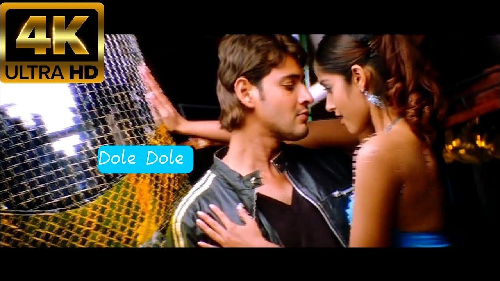
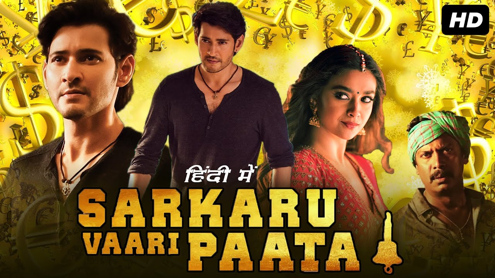
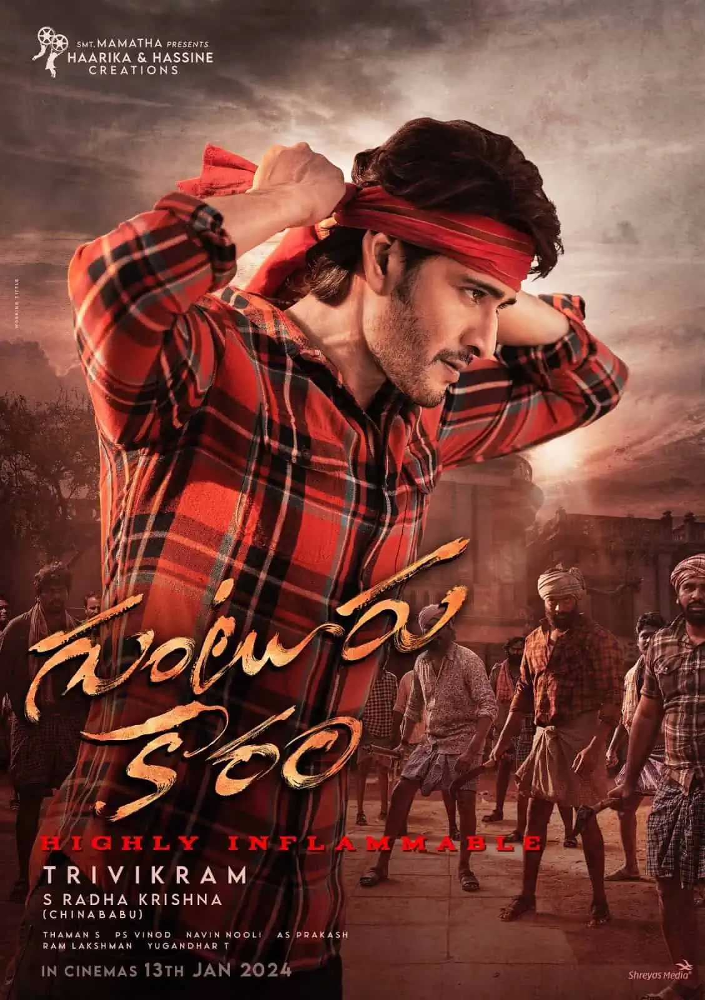

*mahesh babu biodata*
1.BASIC INFORMATION:
- pokiri

- sarkaruvari paata

- guntur kaaram

2.Another movies
- okkadu
- murari
- srimanthudu
TABLE FORM:
3.Details:
| S.NO |
MOVIES |
YEAR |
| 1 |
pokiri |
2006 |
| 2 |
srimanthudu |
2015 |
| 3 |
guntur kaaram |
2024 |
| 4 |
maharshi |
2019 |
| 5 |
sarkaruvari paata |
2022 |
nested iframe
iframe2
iframe3
iframe1
iframe2
image
audio
video
wikipedia
MS DHONI BIO DATA:
BACK TO TOP